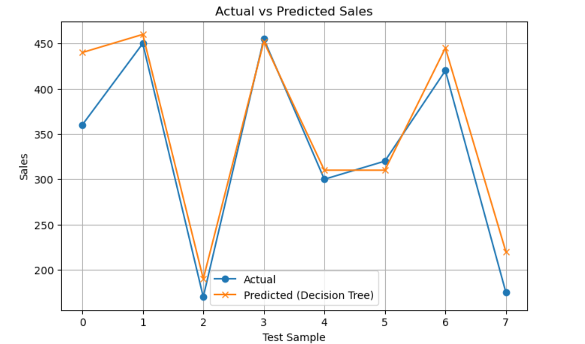

Comparing Decision Tree, KNN, and Regression models to forecast sales using AI.
This project explores how AI and machine‑learning models can be used to predict monthly sales based on a combination of marketing, economic, and competitive variables. I designed the workflow to compare multiple models and identify the approach that delivers the lowest prediction error.
The dataset includes variables that are positively and negatively correlated with sales. Advertising spend and economic strength tend to increase sales, while competitor discounts reduce them. After preparing the data, I trained three models: a Decision Tree Regressor, a K‑Nearest Neighbors (KNN) model, and a Linear Regression model.
The cleaned dataset used for modeling is structured as follows:
| Month | Advertising Spend | Economic Index | Competitor Discount | Season | Sales |
|---|---|---|---|---|---|
| 1 | 9000 | 68 | 7 | Winter | 140 |
| 2 | 9500 | 70 | 6 | Winter | 150 |
| 3 | 11000 | 72 | 5 | Spring | 190 |
| 4 | 13000 | 74 | 4 | Spring | 220 |
| 5 | 15000 | 76 | 3 | Spring | 260 |
| 6 | 16000 | 78 | 3 | Summer | 310 |
| 7 | 17000 | 80 | 2 | Summer | 360 |
| 8 | 17500 | 82 | 2 | Summer | 380 |
| 9 | 16000 | 78 | 4 | Fall | 300 |
| 10 | 18000 | 80 | 3 | Fall | 320 |
| 11 | 20000 | 82 | 2 | Fall | 340 |
| 12 | 22000 | 85 | 1 | Winter | 420 |
| 13 | 23000 | 86 | 1 | Winter | 430 |
| 14 | 24000 | 88 | 1 | Winter | 440 |
| 15 | 25000 | 90 | 2 | Winter | 445 |
| 16 | 26000 | 92 | 3 | Winter | 450 |
| 17 | 27000 | 94 | 4 | Winter | 452 |
| 18 | 28000 | 95 | 5 | Winter | 455 |
| 19 | 15000 | 60 | 10 | Recession | 120 |
| 20 | 16000 | 62 | 9 | Recession | 130 |
| 21 | 17000 | 64 | 8 | Recession | 135 |
| 22 | 18000 | 66 | 7 | Recession | 150 |
| 23 | 19000 | 68 | 6 | Recession | 160 |
| 24 | 20000 | 70 | 5 | Recession | 170 |
| 25 | 21000 | 72 | 4 | Recession | 175 |
| 26 | 22000 | 74 | 3 | Recovery | 240 |
| 27 | 23000 | 76 | 2 | Recovery | 300 |
| 28 | 24000 | 78 | 2 | Recovery | 360 |
| 29 | 25000 | 80 | 1 | Recovery | 420 |
| 30 | 26000 | 82 | 1 | Recovery | 460 |
Positively correlated: AdvertisingSpend, EconomicIndex
Negatively correlated: CompetitorDiscount
I trained three models to predict Sales from the other variables and evaluated them using Mean Squared Error (MSE):
The Decision Tree achieved the lowest MSE, indicating that it captured the non‑linear relationships in the data more effectively than KNN or Linear Regression. This makes it the recommended model for forecasting sales in this scenario.
To make the results more interpretable, I plotted actual versus predicted sales for the test set using the Decision Tree model. The closer the predicted line is to the actual line, the better the model performance.

This project reinforced how important data preparation, feature selection, and model evaluation are in any AI‑driven workflow. Even with a relatively small dataset, the choice of model and error metric significantly affects the quality of predictions. The Decision Tree model’s performance highlighted the value of capturing non‑linear interactions between variables.
More broadly, this work reflects how I think about AI: as a tool that augments human judgment. The model can quickly generate forecasts, but the real value comes from interpreting those predictions thoughtfully and embedding them in a broader decision‑making context, supported by clear visualizations in tools like Power BI.